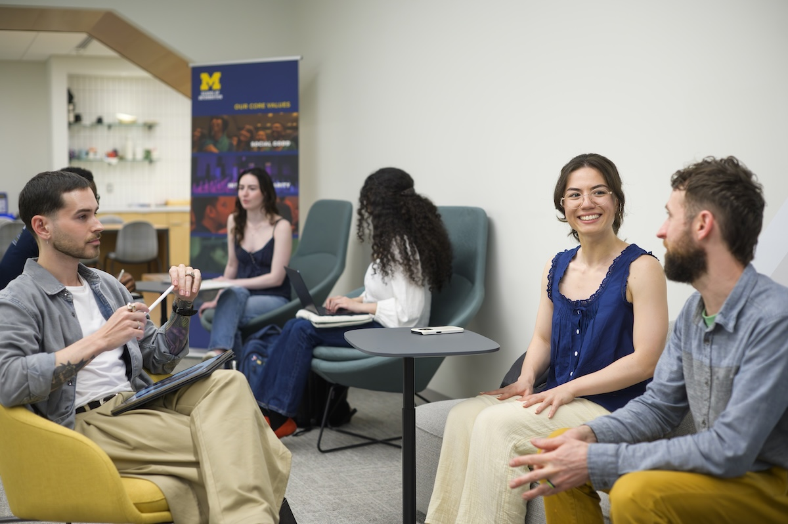

Turning Preparation into Action
The beginning of an engaged learning project
is an opportunity to establish a strong
relationship with your community partner.
During this phase, students begin professional
communication, organize their first meetings,
and clarify expectations for the work ahead.
Establishing clear communication and shared
responsibilities early can help prevent
misunderstandings and create a more
productive working relationship.

Three Steps to Starting Your Project
Use these steps to move from initial contact
to an organized project partnership.
1. Contact Your Community Partner
Begin by sending a professional introductory
email to your client or community partner.
Introduce your team, explain your connection
to the project, and request an initial meeting.
According to the UMSI Initial Client Email
Examples, your first email should include:
- A professional greeting.
- Your name and your team members' names.
- An explanation of why you are contacting the partner.
- Several possible meeting times and options for meeting.
- An appreciative closing.
If possible, provide multiple scheduling
options and ask which communication method
works best for your partner.
View Initial Client Email Examples
2. Organize Your First Meeting
Your first meeting is an opportunity to
learn about your partner, introduce your
team, and begin defining the project.
The UMSI Initial Client Meeting Sample
Agenda recommends covering six topics:
-
Introductions:
Share names, backgrounds, and
relevant experiences.
-
Organization and project:
Learn about the organization,
ask questions, clarify expected
outcomes, and discuss privacy
agreements when necessary.
-
Timeline:
Discuss the expected project
completion date.
-
Contacts:
Identify primary and secondary
contacts on both teams and
verify their contact information.
-
Communication:
Agree on how and when to meet,
communicate, and share updates.
-
Final questions:
Address remaining questions
or uncertainties.
View Initial Client Meeting Sample Agenda
3. Establish Shared Expectations
After the initial meeting, make sure
your team and partner understand
the project's goals, responsibilities,
communication practices, and expected
outcomes.
For student organizations participating
in the SO-ELL program, the Student
Org-ELO Partnership Agreement outlines
responsibilities for project engagement
and communication.
-
Establish a regular communication
schedule with the client.
-
Provide client status updates
at least once per week.
-
Prepare an agenda at least
24 hours before each client meeting.
-
Respond to ELO or client emails
within 48 hours.
-
Report project progress,
challenges, and major issues
to ELO as required.
These are requirements documented
for SO-ELL student organizations.
Students in other engaged learning
programs should follow the expectations
established for their own projects.
View Student Org-ELO Partnership Agreement Template
Building a Respectful Partnership
A successful engaged learning experience
should consider both student learning
goals and the needs of the community
partner.
The Ginsberg Center's guiding questions
encourage students to think about how
community partners will participate
in project planning, decisions,
and evaluation.
Questions to Discuss with Your Partner
-
What does the community partner
hope to gain from this project?
-
How will the partner contribute
to defining project goals?
-
How will community priorities
influence the project timeline
and design?
-
How will the partner participate
in decisions throughout the project?
-
What deliverables will be created,
and how will the partner use them?
-
How will feedback be collected
during the partnership?
Explore the Ginsberg Center Partnership Toolkit
Your Project Launch Checklist
Before moving into active project work,
make sure you have completed these
important starting tasks.
-
Introduce your team to the
community partner.
-
Schedule and prepare an agenda
for the first meeting.
-
Discuss the organization's needs
and the project's expected outcomes.
-
Identify primary contacts and
communication preferences.
-
Clarify the project timeline,
responsibilities, and deliverables.
-
Discuss any necessary privacy
or confidentiality agreements.
-
Agree on how frequently the
team and partner will communicate.
-
Document decisions and remaining
questions for follow-up.
SO-ELL Program Milestones
Students participating in the
Student Organization - Engaged Learning
Leaders (SO-ELL) program should also
review their program schedule.
The provided 2026-2027 SO-ELL schedule
identifies these early milestones:
-
October 9, 2026:
Client outreach deadline for
project managers.
-
October 16, 2026:
Client and team meetings completed,
with projects started.
-
October 23, 2026:
First SO-ELL Officer Check-in
form due.
These dates are specific to the supplied
SO-ELL schedule and may not apply to
other programs or future terms.
View the SO-ELL Schedule
Helpful Starting Resources
Use these UMSI and University of Michigan
resources as you begin working with
your project partner.
Professional Communication
Partnership Agreements
Program Planning
Moving Forward
Once your team has contacted your partner,
completed an initial meeting, and established
shared expectations, you can begin moving
into active project work.
Continue communicating regularly,
documenting decisions, and checking
that your work reflects the needs
of your community partner.